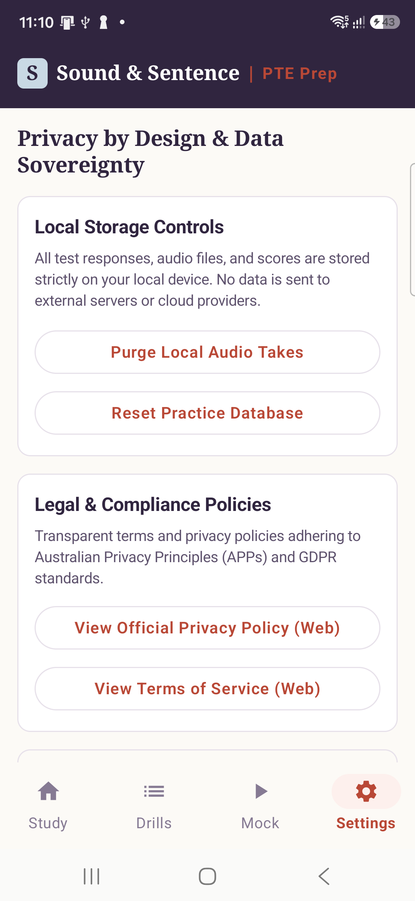

Build your confidence across speaking, writing, reading and listening. Practise with focused exercises, review your responses and see where to concentrate your efforts.

A simple three-step approach designed to keep your preparation structured and measurable.
Explore tasks by individual skill or select a timed preparation exercise covering authentic academic prompt formats.
Listen, speak, read or write using task-appropriate controls, authentic countdown timers and single-play audio constraints.
See what you answered correctly, revisit your recorded takes against benchmark audio, and identify specific areas for further practice.
Each language skill is addressed through targeted exercise formats reflecting official test structures.
Practise speaking tasks, record your responses and listen again to review your delivery, pronunciation and pacing.
Work on summaries and essays with task-specific timing, real-time word-count counters and clear Form guidance.
Develop accuracy through comprehension, fill-in-the-blank and paragraph-ordering exercises from authentic academic passages.
Practise understanding spoken English, identifying incorrect words, completing dictation tasks and following academic lectures.
Candidates need both targeted skill drills and realistic examination simulations to prepare effectively.
Focus on individual task types when you want to build specific habits or address known weak spots.
Experience a full, sequential simulation to test your pacing and stamina under authentic test conditions.
Honest, transparent feedback helps you learn more effectively than arbitrary scores that fluctuate unpredictably.
Objective tasks: Reading blanks, writing dictation and multiple-choice questions are checked directly against verified answer keys with clear explanations.
Speaking tasks: Your voice is recorded locally and played back immediately alongside reference benchmark audio, allowing you to self-evaluate pronunciation and fluency against official Pearson criteria.
Writing tasks: Word count, sentence structure (such as the single-sentence rule for summaries) and lexis are verified deterministically without vague automated grading.
An interface designed for calm study, clear typography and distraction-free learning.


Your practice data and voice recordings belong to you, not an advertising network.
Your audio recordings, essay drafts and practice history remain on your local Android device inside the application sandbox.
The app contains no third-party advertising networks or user analytics libraries. Core practice drills and mock exams work offline after installation.
You can delete your recorded takes or reset your practice database at any time directly from the in-app settings screen.
For full details on data handling and backup rules, read our Privacy Policy.
Current status: The application is currently undergoing active candidate preview and external device testing on modern Android hardware, including the Samsung Galaxy A56 and Pixel devices. General public availability on Google Play is scheduled following the conclusion of external testing.